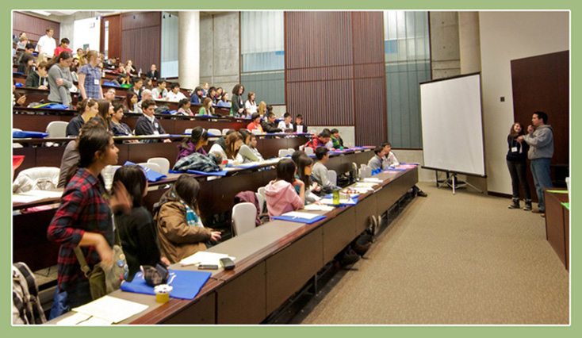

The main Computer Science programs offered for undergraduates are:
- Computer Systems
- Scientific Computing
- Theory of Computation
- Computer Vision
- Human-Computer Interaction
- Game Design
- Computational Linguistics & Natural Language Processing
- Web and Internet Technologies
- Artificial Intelligence

The Departement of CompSci, DCS, is home to internationally-recognized faculty and students. Faculty in DCS have been presented with a wide variety of honours and awards over the years, including the Turing Award (the "Nobel Prize" of Computer Science), and many other international and national honors. Our faculty and graduate students consistently produce high-impact research that is among the most highly cited in computer science and attracts attention far beyond the discipline. Our students, both graduate and undergraduate, excel on the national and international stages. For instance, DCS has been awarded more Canada Graduate Scholarships, the country's most prestigious graduate fellowship, than any other computer science department in Canada.
To give you an idea:
Computer Systems
"Software systems are complex and interesting. Poorly done systems can be incredibly expensive: they can cost
society billions of dollars, and sometimes make the difference between life and death. Rapid changes in
technology and applications means that the underlying systems must continually adapt. This focus takes you
under the covers of software systems, laying bare the layers and introducing you to concurrency issues,
scalability, multiprocessor systems, distributed computing, and more."
Web and Internet Technologies
"The Web and Internet Technologies Focus introduces students to the systems and algorithms that power
today's large-scale web and Internet applications such as search engines, social networking applications,
web data mining applications, and content distribution networks. The focus covers both the algorithm
foundations of Web and Internet Technologies, as well as the implementation and system architecture.
Students who wish to pursue the Web and Internet Technologies focus should have a solid understanding
of statistics, should be good programmers and have a good understanding of data structures and algorithm
design.
To get practical experience, students pursuing the web and Internet technologies concentration are
encouraged to do either a term project or a summer USRA carrying out a project in web and internet
technologies."
Game Design
"Video game design combines several disciplines within computer science, including software engineering,
graphics, artificial intelligence and human-computer interaction. It also incorporates elements of
economics, psychology, music and creative writing, requiring video game researchers to have a diverse,
multidisciplinary set of skills.
Students who wish to pursue video game design should have an understanding of linear algebra (for
computer graphics modeling), computer hardware and operating systems (for console architecture), data
structures, and algorithm design. Students will gain a general knowledge of the more advanced topics
listed in the courses below."
Artificial Intelligence
Artificial Intelligence (AI) is aimed at understanding and replicating the computational processes
underlying intelligent behaviour. These behaviours include the perception of one's environment, learning
how that environment is structured, communicating with other agents, and reasoning to guide one's actions.
This concentration is designed to provide students with an introduction to some of the key scientific and
technical ideas that have been developed in AI. There are four different sub-areas of AI represented in
our department: Computer Vision, Computational Linguistics (CL), Machine Learning (ML), and Knowledge
Representation and Reasoning (KR). These areas cover a wide variety of ideas and techniques. Students
wanting to achieve this concentration are required to take courses from at least two of these sub-areas.
Scientific Computing
"Scientific computing studies the world around us. Known and unknown quantities are related through
certain rules, e.g. physical laws, formulating mathematical problems. These problems are solved by
numerical methods implemented as algorithms and run on computers. The numerical methods are analyzed
and their performance (e.g. accuracy, efficiency) studied. Problems, such as choosing the optimal shape
for an airplane (to achieve, for example, minimal fuel consumption), finding the fair price for derivative
products of the market, or regulating the amount of radiation in medical scans, can be modeled by
mathematical expressions, and solved by numerical techniques.
Students wishing to study scientific computing should have a strong background in mathematics, in particular
calculus of several variables, linear algebra and statistics, be fluent in programming, and have a good
understanding of data structures and algorithm design."